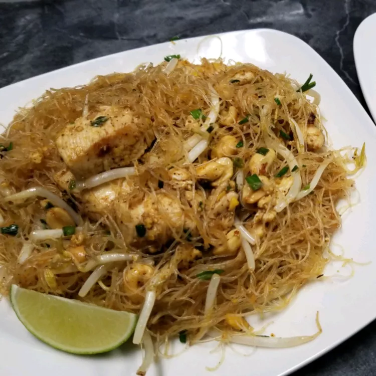

Okinawan-Style Pad Thai

Description
This is a famous dish popularized in Thailand. Although the recipe varies
from cook to cook and region to region, this is a good attempt at
recreating what I ate from Thai-owned hole-in-the-wall restaurants in
Okinawa, Japan. Key to the flavor are the sugar levels, unsalted peanuts,
peanut oil, and either oyster or fish sauce.
Ingredients
- ½ cup white sugar
- ¼ cup oyster sauce
- 2 tablespoons tamarind pulp
- 12 ounce package dried rice noodles x 1
- cold water, as needed
- ½ cup peanut oil
- 4 eggs
- 1 ½ teaspoons minced garlic
- 12 ounces chicken breast, cut into 1/2-inch strips
- 1 ½ tablespoons white sugar, or more to taste
- 1 ½ teaspoons salt
- 1 ½ cups dry-roasted, unsalted peanuts
- 1 ½ teaspoons dried ground Asian radish
- 1 teaspoon chili powder, or more to taste
- ½ cup chopped fresh chives
- 2 cups fresh bean sprouts
- 1 lime, cut into wedges
Steps
-
Whisk together rice wine vinegar, 1/2 cup sugar, oyster sauce, and
tamarind pulp in a saucepan over medium heat until sugar dissolves,
about 5 minutes; remove from heat and set aside.
-
Place rice noodles in a large bowl and pour enough cold water to cover
noodles. Allow to soften, about 10 minutes. Drain.
-
Heat peanut oil in a wok or large skillet over medium heat. Cook and
stir eggs and garlic in hot oil until eggs are softly cooked, 2 to 3
minutes.
-
Stir chicken and noodles into eggs and cook until chicken is no longer
pink in the center and juices run clear, about 5 minutes.
-
Pour rice wine vinegar sauce, 1 1/2 tablespoons sugar, and 1 1/2
teaspoons salt into the noodle mixture.
-
Stir peanuts, ground radish, and chili powder into noodle mixture; cook
until peanuts soften slightly, about 5 minutes. Add more sugar or chili
powder if desired.
-
Remove from heat and toss chives with noodle mixture. Top with bean
sprouts and garnish with lime wedges.